Chapter 13 · Lecture 2
Picturing Manifest Destiny
Art, Photography, and the Myth of the Vanishing Indian, 1840–1910
HIST 101 · Richland Community College
Background: Albert Bierstadt, The Rocky Mountains, Lander's Peak, 1863 (detail)
Before you begin
How to Visit This Gallery
Each part of the lecture is a gallery room. Every artwork has a museum wall label: artist, title, date, medium, collection. Type your answers in the boxes on the Pause & Reflect slides and the last slide, then download them all as one .txt file on the last slide for Canvas.
Nothing plays unless you ask. Click ▶ (or press G) to turn the guide on: each room and artwork then plays a short talk once when you arrive, then goes quiet so you can look. ❚❚ turns it off. Press CC (or C) for captions.
Off by default. Turn it on to hear each talk and move ahead automatically, with quiet time to look at each artwork. Questions and text slides wait for you.
Pulsing gold dots on key artworks open a close-up detail with a short explanation.
Plain-language notes, key terms, and the written transcript of every Audio Guide talk.
Soft background music begins after your first click or key press. Turn it off any time; it stops at the end.
Part I · Gallery Room 1
Landscapes
Nature as National Destiny
What do these paintings want you to believe about the land?
▶ This room has an Audio Guide: use the button below.
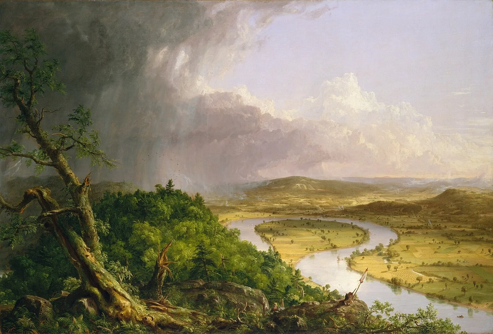
Gallery Room 1
Thomas Cole
American, born England, 1801–1848
View from Mount Holyoke, Northampton, Massachusetts, after a Thunderstorm—The Oxbow
1836
Oil on canvas
The Metropolitan Museum of Art, New York
The Connecticut River near Northampton, Massachusetts.
Look closer: tap the 3 gold dots
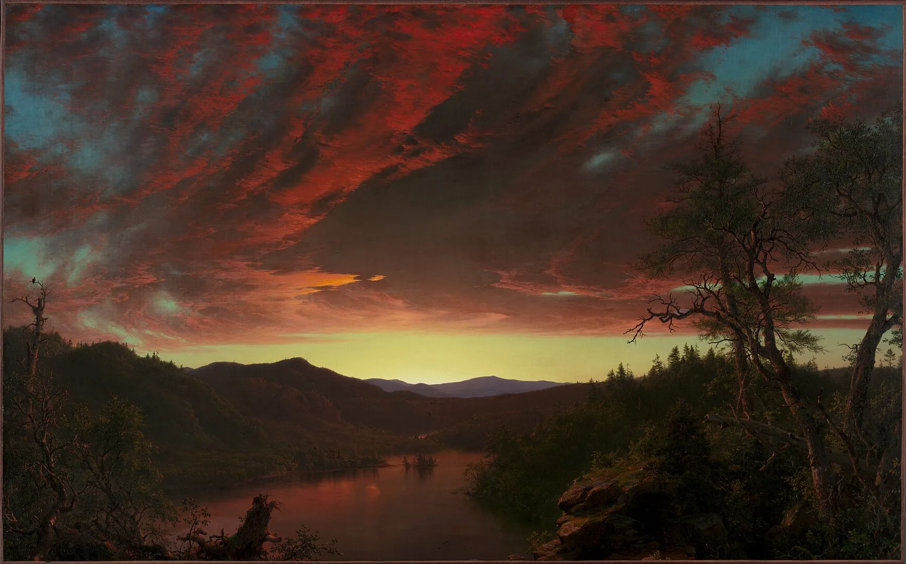
Gallery Room 1
Frederic Edwin Church
American, 1826–1900
Twilight in the Wilderness
1860
Oil on canvas
The Cleveland Museum of Art
Look closer: tap the 3 gold dots

Gallery Room 1
Albert Bierstadt
American, born Germany, 1830–1902
The Rocky Mountains, Lander's Peak
1863
Oil on canvas
The Metropolitan Museum of Art, New York
Exhibited in New York in 1864, during the Civil War.
Look closer: tap the 3 gold dots
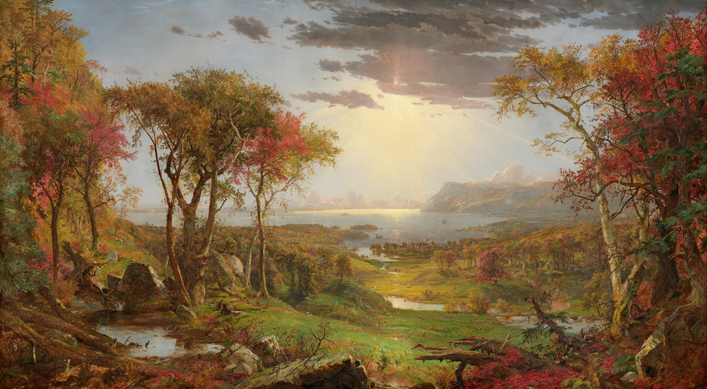
Gallery Room 1
Jasper Francis Cropsey
American, 1823–1900
Autumn—On the Hudson River
1860
Oil on canvas
National Gallery of Art, Washington
Painted in London for British audiences.
Look closer: tap the 3 gold dots
Room 1 · Pause & Reflect
Pause & Reflect
These paintings show the American landscape as vast, pristine, and empty. What does that visual choice argue about who the land belongs to?
Jot down your answer before you move on. Study Buddy (N) has hints, not answers.
Part II · Gallery Room 2
Indigenous Portraiture
Noble Figures From a "Distant" World
These are living diplomats. Why do they look like relics?
▶ This room has an Audio Guide: use the button below.
Charles Bird King
- Worked in Washington, D.C., painting Native delegations who came to negotiate treaties and defend their nations
- His portraits formed the government's "Indian Gallery," displayed in the War Department, the same place coordinating removal policy
- Presents sitters against neutral backgrounds, emphasizing "traditional" clothing and dignified stillness
- The effect: it freezes living political leaders as if they belonged to an earlier, disappearing world
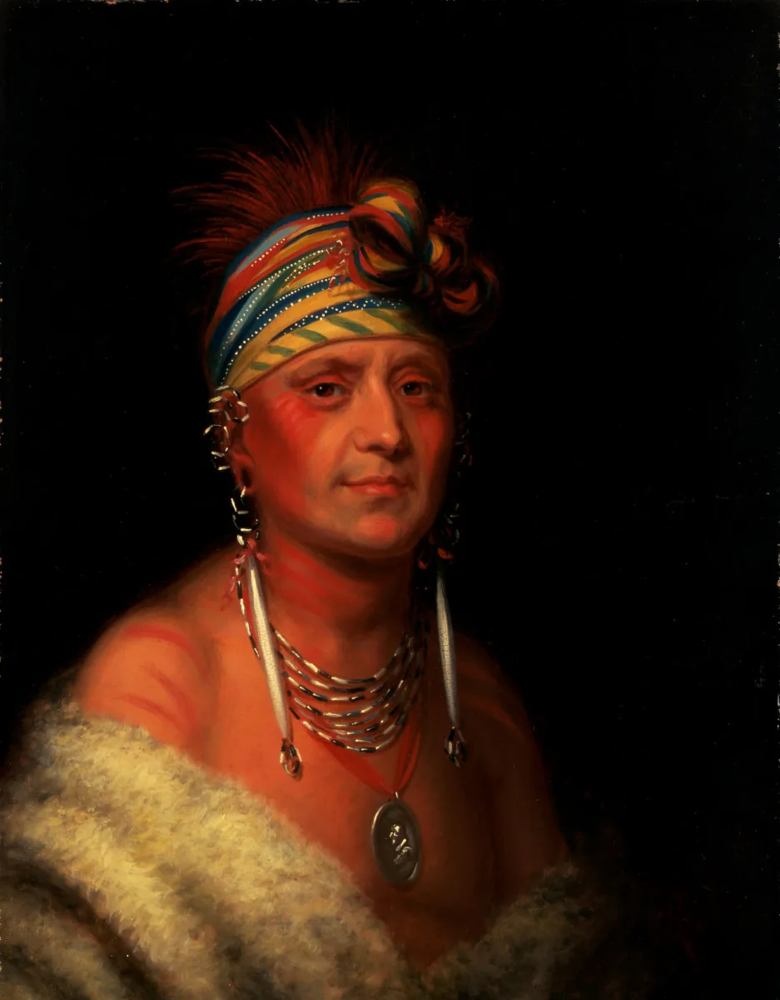
Gallery Room 2
Charles Bird King
American, 1785–1862
Monchousia (White Plume), Kansa
c. 1822
Oil on panel
White House Collection / White House Historical Association
King's own replica of his 1822 portrait.
Look closer: tap the 3 gold dots
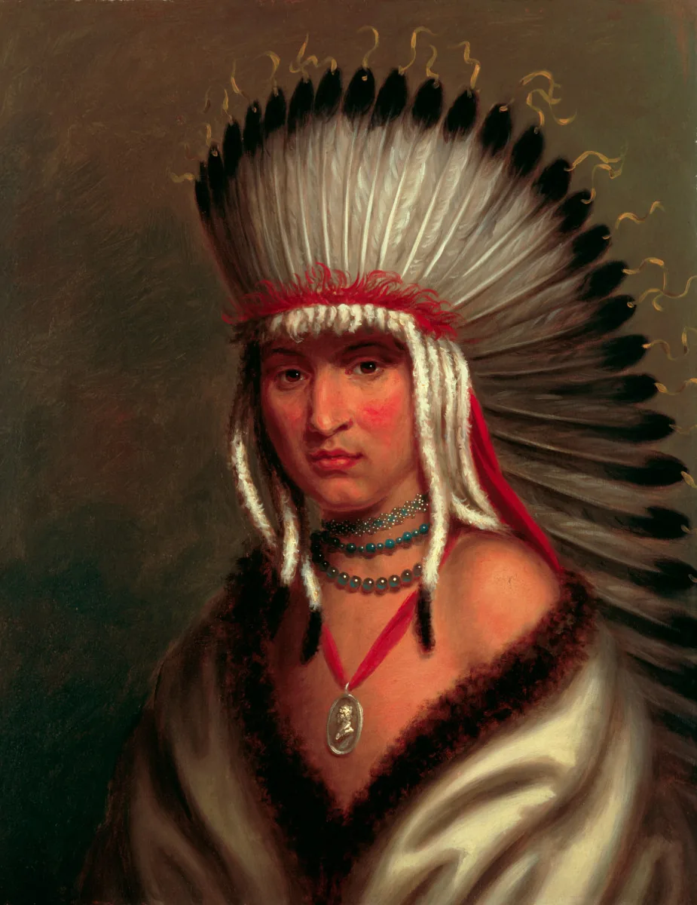
Gallery Room 2
Charles Bird King
American, 1785–1862
Petalesharro (Generous Chief), Pawnee
c. 1822
Oil
White House Collection / White House Historical Association
King's own replica of his 1822 portrait.
Look closer: tap the 3 gold dots
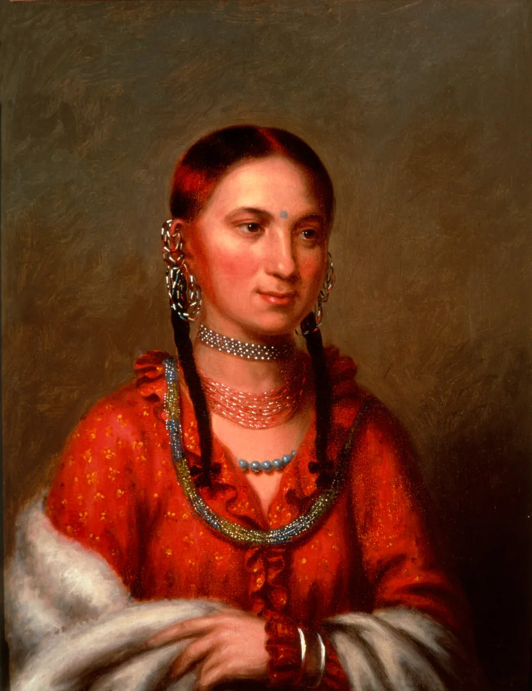
Gallery Room 2
Charles Bird King
American, 1785–1862
Hayne Hudjihini (Eagle of Delight), Oto
c. 1822
Oil
White House Collection / White House Historical Association
King's own replica of his 1822 portrait.
George Catlin
- Spent the 1830s painting Mandan, Hidatsa, Blackfeet, Crow, and other Plains nations
- Described his mission as "rescuing from oblivion" the looks and customs of a "vanishing" race
- Staged sitters in ceremonial dress, emphasizing the exotic and timeless over everyday life
- Deep contradiction: preserved invaluable visual records while framing them as inevitable disappearance
"…rescuing from oblivion the looks and customs of the vanishing races of native man in America, to which I plainly saw they were hastening before the approach and certain progress of civilization."
George Catlin, describing his decision to paint the Plains nations
Catlin's Portraits: Authentic or Staged?
- What he actually painted (1830s): Living cultures. Ceremonial regalia, buffalo-skin lodges, and traditional dress were genuinely active, not reconstructions
- The staging element: He asked subjects to wear their finest ceremonial clothing, like a formal portrait versus work clothes
- The real problem: The "vanishing race" narrative, claiming Native peoples were inevitably disappearing, ignoring agency and adaptation
- Bottom line: Catlin documented living cultures through a selective, romanticizing lens that served white expectations
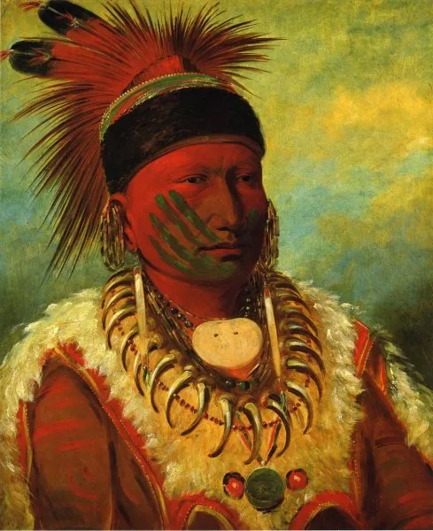
Gallery Room 2
George Catlin
American, 1796–1872
The White Cloud, Head Chief of the Iowas
1844/1845
Oil on canvas
National Gallery of Art, Washington (Paul Mellon Collection)
Painted in Europe, where White Cloud's party toured with Catlin's Indian Gallery.
Look closer: tap the 3 gold dots
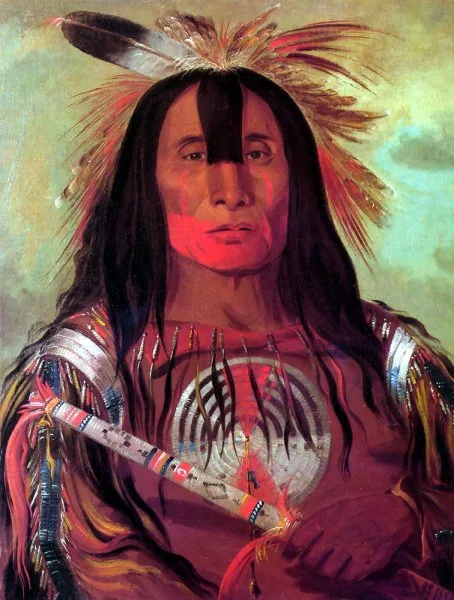
Gallery Room 2
George Catlin
American, 1796–1872
Stu-mick-o-súcks, Buffalo Bull's Back Fat, Head Chief, Blood Tribe
1832
Oil on canvas
Smithsonian American Art Museum (Gift of Mrs. Joseph Harrison, Jr.)
The Blood (Kainai) are part of the Blackfoot Confederacy.
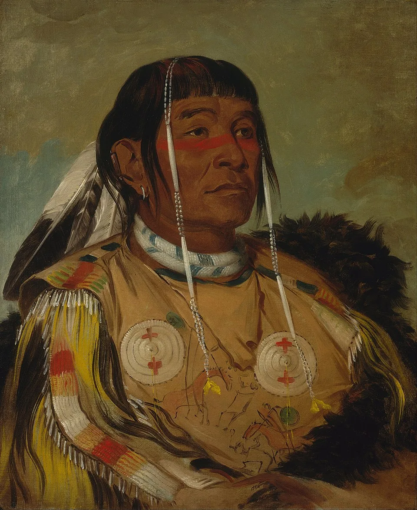
Gallery Room 2
George Catlin
American, 1796–1872
Sha-có-pay, The Six, Chief of the Plains Ojibwa
1832
Oil on canvas
Smithsonian American Art Museum (Gift of Mrs. Joseph Harrison, Jr.)
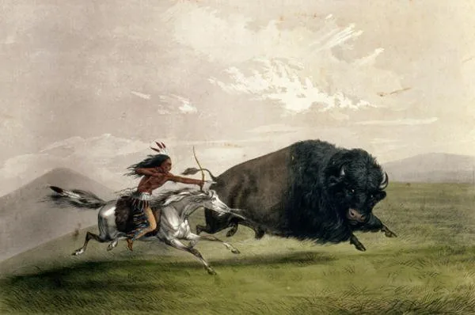
Gallery Room 2
George Catlin
American, 1796–1872
Buffalo Chase, A Single Death
1832–1833
Oil on canvas
Smithsonian American Art Museum (Gift of Mrs. Joseph Harrison, Jr.)
Room 2 · Pause & Reflect
Pause & Reflect
Catlin was painting living leaders: diplomats in Washington, chiefs negotiating treaties. Why did he frame them as if they were already gone?
Jot down your answer before you move on. Study Buddy (N) has hints, not answers.
Part III · Gallery Room 3
Daguerreotypes
Photography's "Truth"
The camera cannot lie, or can it?
▶ This room has an Audio Guide: use the button below.
Photography's "Objective" Lie
- The myth: Photography captures reality without bias: "the camera cannot lie"
- The reality: Every photograph involves choices: framing, timing, subject, what to include and what to exclude
- The danger: Photography claimed authority without accountability. Viewers believed they were seeing truth when they were seeing the photographer's vision
- The paradox: Photography feels factual, but it erases history, stripping away politics, modernity, and context
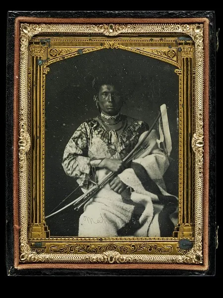
Gallery Room 3
Photographer not identified
Native American daguerreotype
1850s
Daguerreotype
Smithsonian National Museum of American History
The sitter's name is not given here.
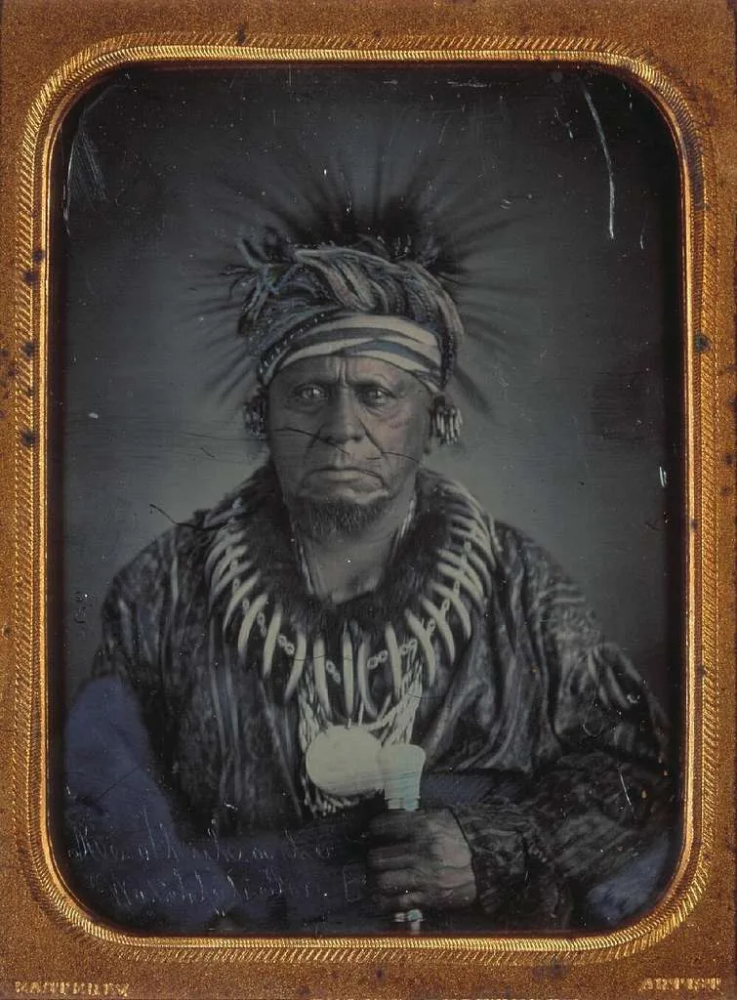
Gallery Room 3
Thomas M. Easterly
American, 1809–1882
Keokuk (Watchful Fox), Sauk leader
1847
Daguerreotype
Missouri Historical Society, St. Louis
Made in Easterly's St. Louis studio.
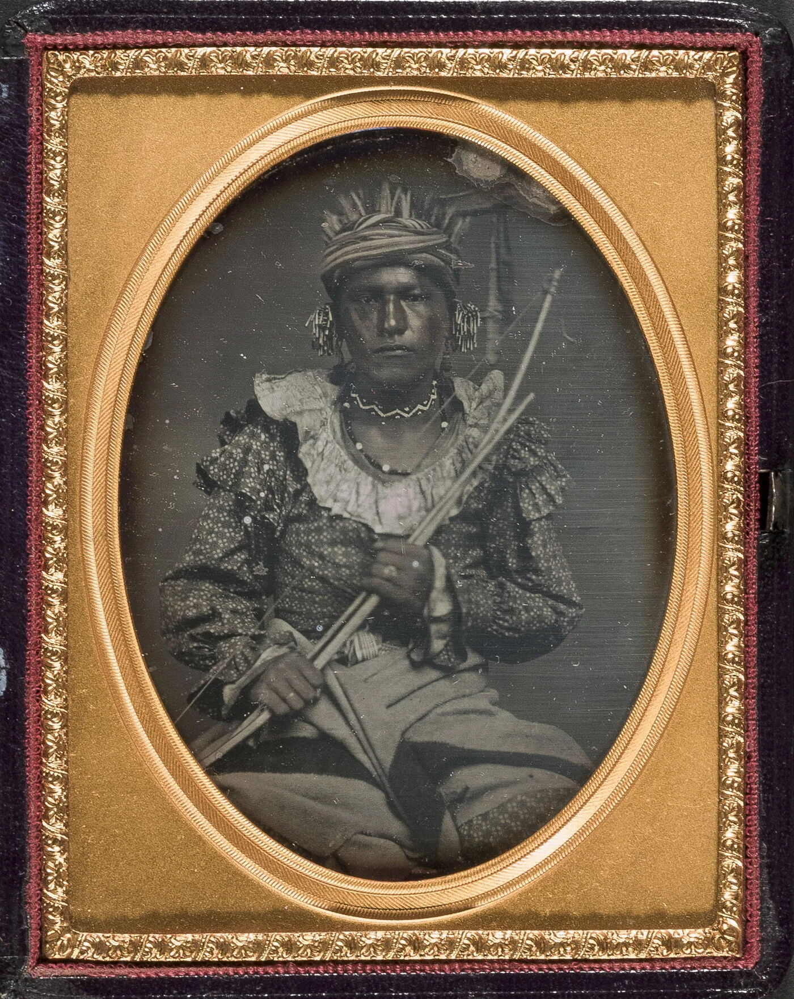
Gallery Room 3
Attributed to Thomas M. Easterly
American, 1809–1882
[Native American, Plains Nations]
c. 1849
Daguerreotype
Amon Carter Museum of American Art, Fort Worth
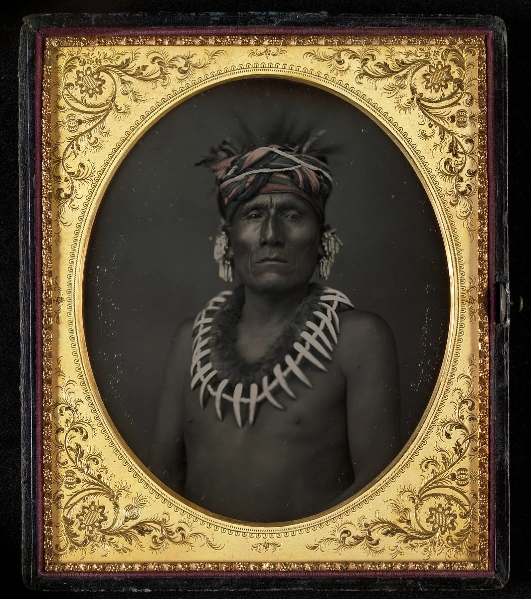
Gallery Room 3
Photographer not identified
Native American daguerreotype
Mid-19th century
Daguerreotype
Collection not identified
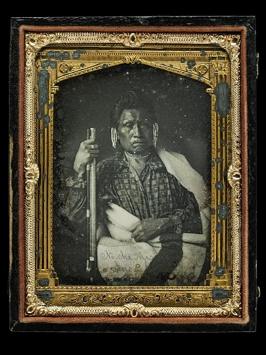
Gallery Room 3
Photographer not identified
Native American daguerreotype
1850s
Daguerreotype
Smithsonian National Museum of American History
Photography's Cultural Power
- By the 1860s–1870s, Brady, Southworth & Hawes, and O'Sullivan taught Americans that photographs were windows onto reality
- Photographs became data, evidence, proof
- What the camera framed became what people believed
- This conviction set the stage for Curtis's enormous cultural impact: photographic "evidence" of the vanishing race became accepted as fact
Room 3 · Pause & Reflect
Pause & Reflect
Jot down your answer before you move on. Study Buddy (N) has hints, not answers.
Part IV · Gallery Room 4
Frontiersmen
The West Has New Protagonists
Where does the settler fit in the visual story?
▶ This room has an Audio Guide: use the button below.
The Pattern Now Complete
Then: Indigenous Peoples
- Isolated, elegiac, frozen in time
- Subjects of romantic tragedy
- Static: no future, no motion
- Backgrounds of their own land
Now: White Settlers
- Dynamic: movement, narrative, destiny
- Purposeful, modern, future-facing
- The land welcomes them
- Protagonists of the national story
The land looks empty. Indigenous people look frozen. Settlers look like the rightful heirs.
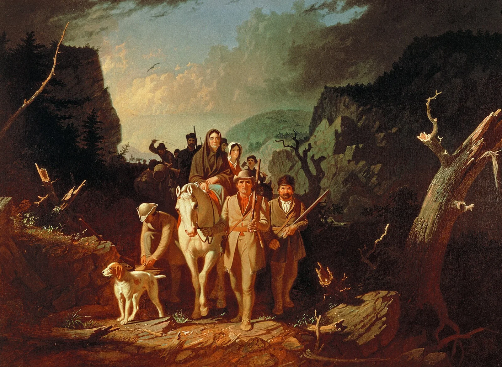
Gallery Room 4
George Caleb Bingham
American, 1811–1879
Daniel Boone Escorting Settlers through the Cumberland Gap
1851–1852
Oil on canvas
Mildred Lane Kemper Art Museum, Washington University in St. Louis
Added for this gallery (public domain, Wikimedia Commons).
Look closer: tap the 3 gold dots
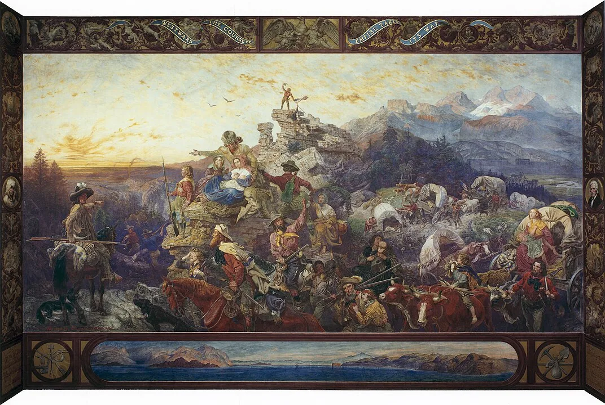
Gallery Room 4
Emanuel Leutze
American, born Germany, 1816–1868
Westward the Course of Empire Takes Its Way
1861–1862
Stereochrome (pigment on plaster, sealed with waterglass), 20 × 30 ft
U.S. Capitol, House Wing, West Stairway
Commissioned in July 1861 by Capitol superintendent Montgomery C. Meigs.
Look closer: tap the 3 gold dots
Gallery Room 4
Jasper Francis Cropsey
American, 1823–1900
Autumn—On the Hudson River
1860
Oil on canvas
National Gallery of Art, Washington
Painted in London for British audiences.
Look closer: tap the 3 gold dots
Room 4 · Pause & Reflect
Pause & Reflect
Settler paintings show almost no conflict with Indigenous peoples. What does that visual choice tell viewers about whether conquest was violent or inevitable?
Jot down your answer before you move on. Study Buddy (N) has hints, not answers.
Part V · Gallery Room 5
Frederic Remington
From Frontier Myth to Imperial Image
What happens when frontier mythology needs a new frontier?
▶ This room has an Audio Guide: use the button below.
Frederic Remington: Who Was He?
- America's most famous illustrator: cowboys, cavalry, Native warriors on the Plains
- His images defined what the mythic West looked like for millions of Americans who never went there
- By the 1890s, his visual grammar (masculine, violent, heroic) was the dominant image of frontier America
- Deep friendship with Theodore Roosevelt; illustrated Roosevelt's own writings on the West
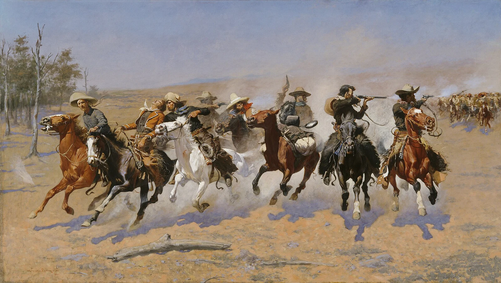
Gallery Room 5
Frederic Remington
American, 1861–1909
A Dash for the Timber
1889
Oil on canvas
Amon Carter Museum of American Art, Fort Worth

Gallery Room 5
Frederic Remington
American, 1861–1909
The Fall of the Cowboy
1895
Oil on canvas
Amon Carter Museum of American Art, Fort Worth
Published in Harper's Monthly, September 1895.

Gallery Room 5
Frederic Remington
American, 1861–1909
Fired On
1907
Oil on canvas
Smithsonian American Art Museum
Remington's Pivot: Frontier to Empire
- 1897: William Randolph Hearst sends Remington to Cuba: not a reporter, but America's most famous illustrator
- His job: construct the visual reality of Spanish oppression for mass audiences
- The same visual grammar (masculine heroes, threatening others, ordained violence) migrated from Wyoming to Havana
- The frontier myth became imperial justification: If Americans had a destiny to tame the West, they had a destiny to rescue Cuba

Gallery Room 5
Frederic Remington
American, 1861–1909
Charge of the Rough Riders at San Juan Hill
1898
Oil on canvas
Frederic Remington Art Museum, Ogdensburg, New York
Room 5 · Pause & Reflect
Pause & Reflect
Remington's frontier paintings and his Cuba illustrations use identical visual grammar. What does that tell us about how Americans understood the Spanish-American War?
Jot down your answer before you move on. Study Buddy (N) has hints, not answers.
Part VI · Gallery Room 6
Edward Curtis
The Invention of Disappearance
Seventy years of visual rhetoric crystallized into one phrase
▶ This room has an Audio Guide: use the button below.
Edward Curtis: The Invention of Disappearance
- Curtis enters (1890s–1910s): Gathered the visual habits Americans had absorbed over seventy years
- His methods: Staged scenes in older clothing; removed clocks, wagons, fences, metal tools; retouched photographs to erase Native modernity
- His most famous image: The Vanishing Race, the crystallization of a century of visual argument
- Curtis didn't invent this idea; he aestheticized it, marketed it, and sold it in twenty volumes
Historians call the entire tradition the Myth of the Vanishing Indian
Edward Curtis Gallery
→ Edward S. Curtis · Wikipedia Gallery
Look for signs of modernity that might have been edited out. Think about who these images were made for, and what they were designed to communicate.
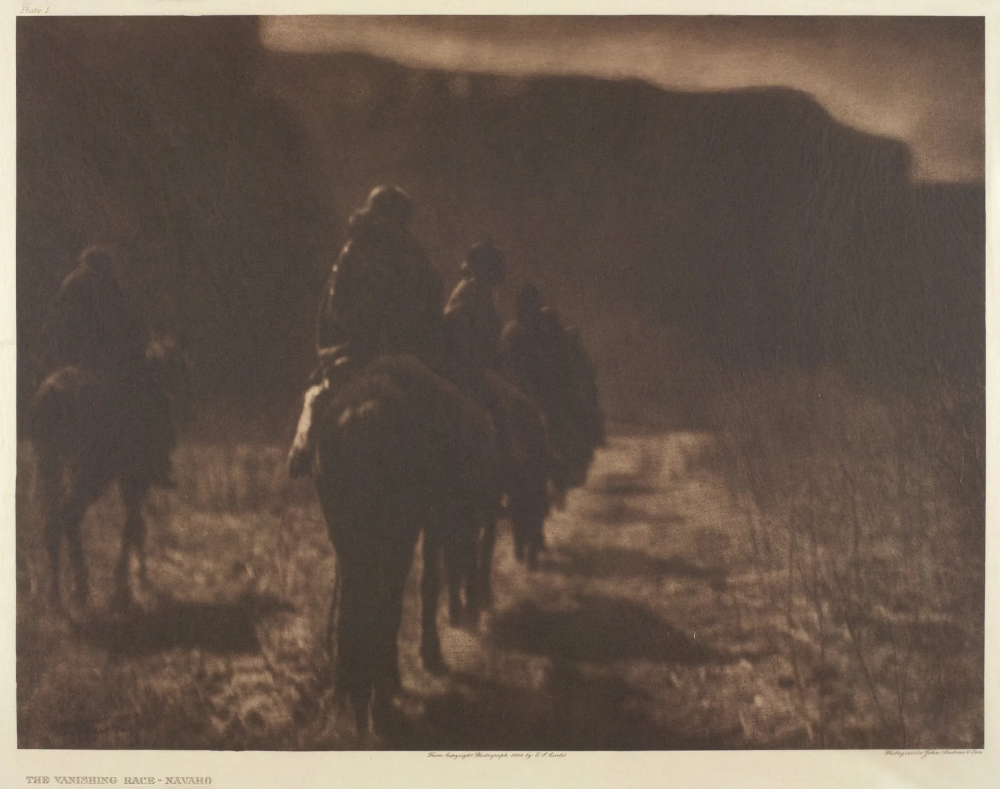
Gallery Room 6
Edward S. Curtis
American, 1868–1952
The Vanishing Race—Navaho
1904 (published 1907)
Photogravure
The North American Indian, Portfolio 1, Plate 1
Look closer: tap the 3 gold dots
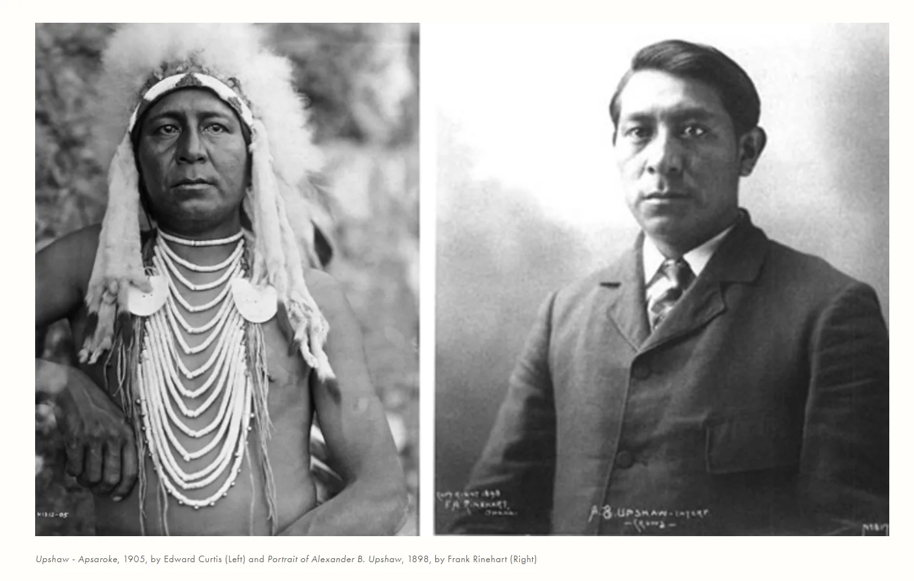
Gallery Room 6
Edward S. Curtis (left); Frank A. Rinehart (right)
Upshaw—Apsaroke (1905, left) and A. B. Upshaw, Interp., Crows (1898, right)
1905; 1898
Photographs
Public domain
The same man, photographed seven years apart.
Look closer: tap the 3 gold dots
Curtis at Work: The Missing Clock
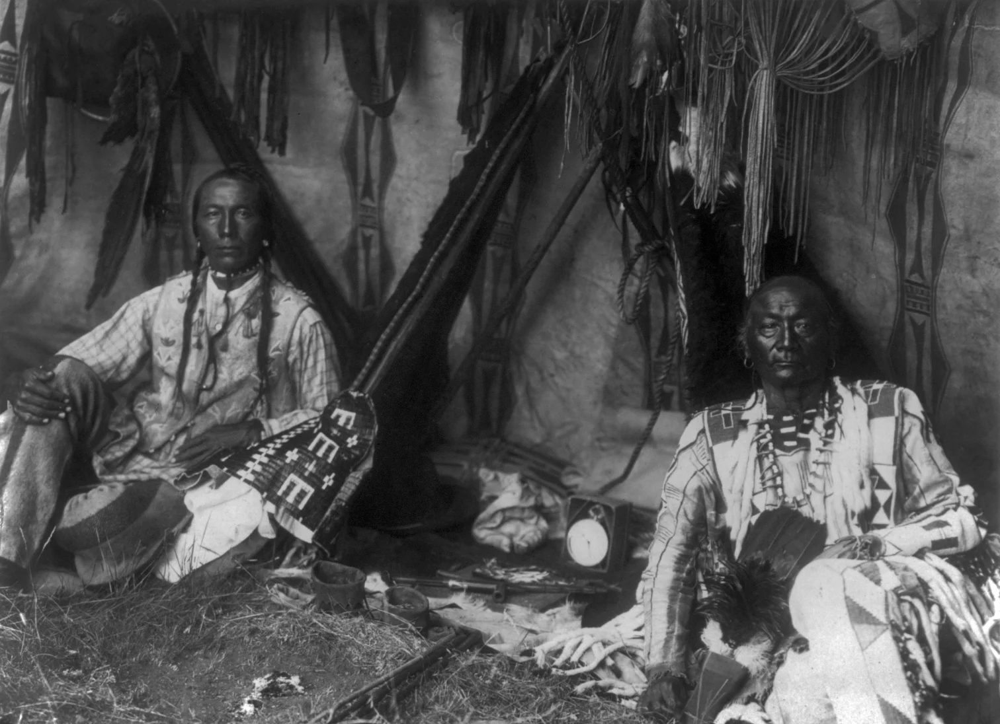
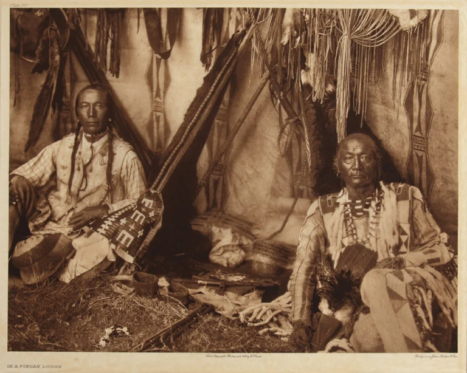
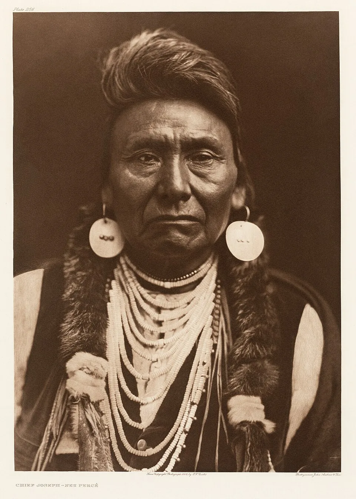
Gallery Room 6
Edward S. Curtis
American, 1868–1952
Joseph—Nez Percé
1903
Photograph
Public domain
Joseph died the next year, in 1904.
Reservation-Era Modernity: The Truth Curtis Hid
By the 1890s–early 1900s, Indigenous nations were:
- Forming political organizations
- Publishing newspapers
- Fighting court cases over land and sovereignty
- Sending children to tribal-run schools
- Creating new art forms
- Blending traditional governance with new strategies
- Wearing both traditional and modern clothing
- Shaping pan-tribal movements
The truth: Curtis's world is not a record of Indigenous society. It is a record of his own imagination.
The reality: Reservation-era life was complex, creative, adaptive, and fiercely modern.
What Curtis Refused to Photograph
What He Showed
- Ceremonial regalia, traditional dress
- Timeless, elegiac landscapes
- Figures disappearing into shadow
- "The Vanishing Race"
What He Hid
- Political organizing, tribal newspapers
- Court battles for sovereignty
- Reservation poverty and resistance
- Modern, adaptive Indigenous life
The "Vanishing Race" Never Vanished
- Today: 575 federally recognized tribes in the U.S. (2026): millions of Indigenous people, with languages and cultures ongoing and sovereignty exercised
- What actually vanished: Not Indigenous nations, but the ability of many Americans to imagine them as modern, political, creative peoples
- The lesson: Images don't just reflect reality; they shape what people become capable of believing
Room 6 · Pause & Reflect
Pause & Reflect
Curtis photographed real people and real places. Why does that make his images more dangerous than Catlin's paintings, not less?
Jot down your answer before you move on. Study Buddy (N) has hints, not answers.
Conclusion: Seeing the West Again
- Landscapes made the continent look empty
- Portraits made Native people look timeless, outside of history
- Settler paintings made white Americans look like the rightful heirs
- Remington exported the same grammar from Wyoming to Cuba
- Curtis gave the entire system a name: The Vanishing Race
Images shape imagination, and imagination shapes history
Gallery Exit · The Closing Question
How do images shape what a nation becomes capable of believing?
And what visual arguments are we absorbing right now that we can't yet see clearly?
My Reflections
Delete all seven typed answers from this browser? This cannot be undone. Download first if you need them.
Your answers are saved only in this browser on this computer. They are not sent anywhere. Download the file and upload it to Canvas yourself. If you switch computers or browsers, or clear your browser data, the answers will not be there.